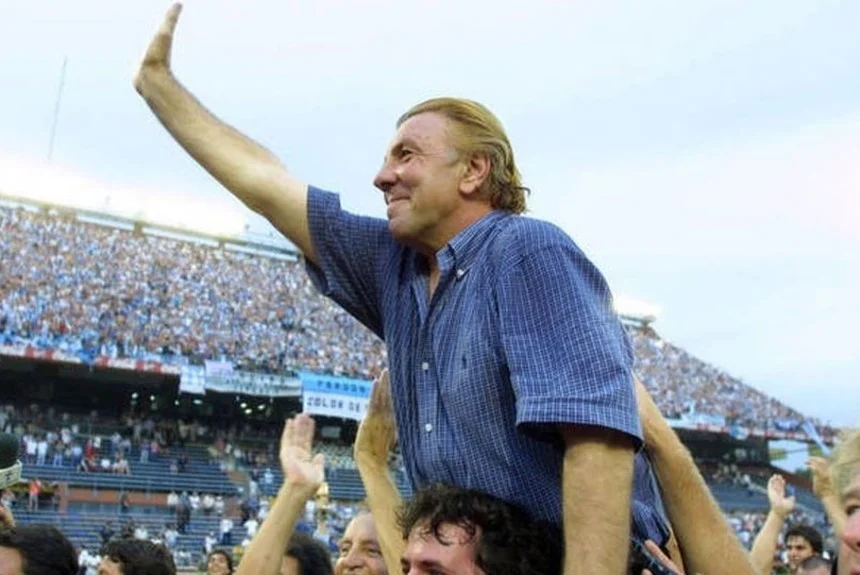
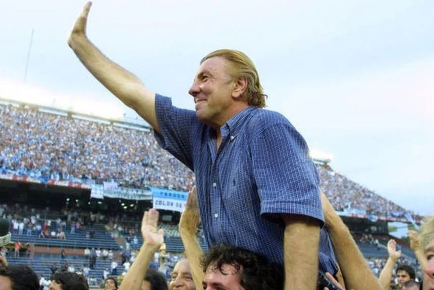

FOTOS DEL CLUB
Emblemas
Fotos representativas y emblemas de club del club:
Estadio: Este es el icónico Estadio Presidente Perón, inaugurado en 1950. Ha sido el escenario de innumerables victorias y momentos históricos para Racing Club y su hinchada apasionada.
Hinchada y Bandera: La hinchada de Racing Club es famosa por su pasión y lealtad inquebrantable al equipo. La bandera que se muestra es considerada la más grande del mundo en 1997.
Sede: La Sede Avenida, ubicada en Mitre 934, es un lugar importante para la administración y la comunidad del club. Es el corazón de muchas actividades relacionadas con Racing Club.
Evolución de los Escudos: Esta imagen muestra la evolución de los escudos de Racing Club a lo largo de su historia. Cada escudo representa una época y un legado en la historia del club, que ha evolucionado con el tiempo.
Copa Libertadores 1967

Obtención de la Copa Libertadores de América en 1967:
En aquella ocasión disputada en suelo chileno, un partido desempate por la final, el glorioso equipo a las órdenes de Juan José Pizzuti se quedó con la serie ante Nacional de Uruguay, gracias a los goles de Cardoso y de Raffo.
Una gesta épica que será por siempre sinónimo de gloria y de orgullo racinguista. Racing, al disputar 20 partidos para ser campeón, obtuvo el récord de ganar la Copa Libertadores más extensa de la historia y además habiendo sumado 32 puntos bajo el antiguo sistema de puntuación (2 puntos por victoria y 1 por empate, hoy serían 46 puntos en total) es el campeón con mayor puntuación en una edición de la Copa.
La serie final frente a Nacional fue dura, la ida se disputó el 15 de agosto en el Estadio Presidente Perón y acabó 0 a 0. El mismo resultado se repitió el 25 de agosto en el Estadio Centenario. Y otra vez tocó volar a Santiago para definir la historia en 90 minutos. Once nombres para la eternidad: Agustín Cejas, Oscar Martín, Roberto Perfumo, Alfio Basile, Rubén Díaz, Juan Carlos Rulli, Miguel Ángel Mori, Humberto Maschio, Joao Cardoso, Juan Carlos Cárdenas y Norberto Raffo.
Copa Intercontiental 1967
Academia mundial
El 4 de noviembre de 1967, Racing se consagró como el Campeón del Mundo. Fue en Uruguay, adentro de un "Estadio Centenario" colmado y ante el Celtic escocés por 1 a 0, gracias a un zapatazo de Juan Carlos Cárdenas, que puso a La Academia en la cima del planeta fútbol y le dio al fútbol argentino su primer Título Intercontinental.
El Equipo de José siempre iba por todo. Ya había ganado el título en 1966 y la Copa Libertadores un par de meses antes.
Primero, hubo viaje a Escocia para abrir la serie. El partido se disputó el 18 de octubre en el Hampden Park, Fue victoria del equipo escocés por 1 a 0 gracias a un cabezazo de Billy McNeill, en un partido brusco. El partido de vuelta, se disputó en el Cilindro de Avellaneda en Avellaneda (Buenos Aires), Celtic comenzó ganando 1 a 0, pero Racing Club logró revertirlo por 2 a 1 gracias a los goles de Norberto Raffo y Juan Carlos Cárdenas forzando la serie a un tercer partido de desempate. Finalmente, en el desempate, fue Racing Club quien anotó el único gol del encuentro en la segunda mitad del match, convirtiéndose en el primer equipo argentino en la historia en ganar la competición.
Supercopa Sudamericana 1988
¡Supercampeones!
En Brasil y ante un grande del continente como el Cruzeiro, el equipo dirigido por Alfio Basile se llevó de Belo Horizonte el empate que le valió la obtención de la Supercopa, trofeo por el que competían los mejores de Sudamérica.
Cuando en 1988 se comenzó a disputar la Supercopa Sudamericana, reservada solo para aquellos equipos que habían logrado alzarse con la Copa Libertadores, había una esperanza cierta de que se podía agregar otra página legendaria al libro de hazañas deportivas que conforman la historia de nuestra institución. Y así fue.
El equipo académico encabezado desde por el "Coco" Alfio Basile, una de las glorias históricas de nuestro club, jugó en total seis partidos en el torneo. El debut fue el 10 de febrero de 1988 con un triunfo en el Cilindro ante el Santos por 2 a 0. Luego de igualar sin goles en Brasil, Racing avanzó de manera directa a las semifinales, el rival enfrente fue un viejo conocido: River Plate. La clasificación a la final se hizo real tras ganar por 2 a 1 en el Cilindro e igualar en un tanto en el Estadio Monumental, gracias a un cabezazo memorable de Néstor Fabbri.
En la final, la ida se disputó en Avellaneda y la victoria no fue fácil. Los brasileros golpearon primero a través de Robson y Walter Fernández igualó antes del cierre de la primera parte. En la segunda etapa, Miguel Colombatti marcó un recordadísimo gol que selló un triunfo vital para viajar a Brasil con un poco de tranquilidad. En la revancha, disputada en Belo Horizonte, Omar Catalán abrió la cuenta durante los primeros 45 minutos, pero Robson puso el empate cerca del cierre y le puso algo de suspenso a la última mitad. Pero durante el complemento el equipo mantendría con firmeza su juego y su temple a pesar de la adversidad, para coronarse con el título. La formación puesta en cancha estuvo integrada por Ubaldo Fillol, Carlos Vázquez, Gustavo Costas, Fabbri, Carlos Olarán, Jorge Acuña, Miguel Ludueña, Colombatti, Rubén Paz, Catalán y Fernández.
Fillol, una de las figuras indiscutidas, fue quien levantó con su tradicional buzo verde el trofeo que se sumaría a las vitrinas de la institución.
Campeonato 2001
 

Un grito de corazón: ¡Racing campeón, Racing campeón!
El 27 de diciembre de 2001, en el Estadio José Amalfitani, Racing empató 1 a 1 con Vélez y terminó con 35 años sin celebrar en torneos a nivel local y volvió a consagrarse como el mejor equipo del fútbol argentino. Con la figura maestra de Reinaldo Carlos Merlo detrás de la línea de cal y un plantel excepcional adentro de la cancha se quedó con el Torneo Apertura. Y la conquista se festejó a lleno total, tanto en el estadio de Liniers como en el Cilindro.
La campaña fue sólida de principio a fin y el conjunto de Mostaza acumuló argumentos suficientes como para merecer la consagración: de los 19 encuentros disputados, ganó 12, empató 6 y perdió tan solo uno. Convirtió en total 34 goles y le marcaron 17. River quedó segundo a punto de distancia. La agónica igualdad ante Independiente, por la segunda fecha, figura como uno de los momentos claves. También resultaron vitales las victorias en Rosario, en Córdoba, en Santa Fe y en La Plata. La goleada por 4 a 1 a San Lorenzo fue, sin lugar a dudas, un duelo bisagra para sostenerse en la pelea.
Francisco Maciel, Martín Vitali y Diego Milito estuvieron presentes en todos los compromisos. Maximiliano Estévez fue el principal artillero con 7 conquistas. El resto del plantel lo conformaron Gustavo Campagnuolo, Loeschbor, Claudio Úbeda, Gustavo Barros Schelotto, Adrián Bastía, Alexander Viveros, Rafael Maceratesi, José Chatruc, Carlos Arano, Leonardo Torres, Bedoya, Javier Lux, Luis Rueda, Gastón Pezutti, Gustavo Arce, Diego Loscri, Néstor Ruiz y Cristian Ríos.
Merlo, que había llegado a la institución en el arranque de 2001, fue el artífice intelectual de la hazaña, e hizo popular la frase "paso a paso" con el objetivo de no festejar antes de tiempo. Pero tras el empate sin goles frente a River en la fecha, el DT le dijo a Tití Fernández en el campo de juego: "me enojé. Ahora vamos a salir campeones".
En el último partido, Fecha 19, Iban 8 minutos del segundo tiempo y Gabriel Loeschbor, en una posición adelantada que nadie sancionó, se lanzó al vacío para impactar de cabeza y batir a Gastón Sessa.
Campeonato 2014
El sueño cumplido: Racing es el campeón del fútbol argentino
El 14 de diciembre de 2014, Racing volvía a ser campeón después de 13 años con Diego Milito como capitán y referente. La Academia le ganó por 1 a 0 a Godoy Cruz en el Cilindro y se consagró como el mejor equipo del torneo Transición 2014. Adrián Centurión, en el arranque del segundo tiempo, convirtió el único tanto del encuentro.
Con Milito como líder indiscutido, con Diego Cocca sentado en el banco, aquel equipo cosechó en el Torneo Transición 2014 41 puntos y dejó a River en segundo lugar. Ganó 13, empató dos y perdió cuatro. En el sprint final, no falló: de los últimos nueve compromisos, se impuso en ocho e igualó tan solo uno. Convirtió 30 goles y le hicieron 16. Gustavo Bou, con 10 conquistas, terminó como el máximo artillero del plantel. Sebastián Saja, otro baluarte fundamental, mantuvo la valla invicta durante las últimas seis presentaciones. Luciano Lollo y Gastón Díaz disputaron todos los partidos, aunque el defensor fue quien más minutos en la cancha acumuló a lo largo del campeonato.
Vale la pena, nombrar uno por uno a todos los futbolistas de aquel grupo humano que nos llevó hasta el cielo: Saja, Nelson Ibáñez, Juan Musso, Lollo, Leandro Grimi, Yonathan Cabral, Iván Pillud, Nicolás Sánchez, Germán Voboril, Gastón Campi, Pablo Alvarado, José Luis Gómez, Esteban Saveljich, Díaz, Ricardo Centurión, Ezequiel Videla, Marcos Acuña, Luciano Aued, Nelson Acevedo, Francisco Cerro, Diego Villar, Nicolás Oroz, Mariano Bareiro, Martín Pérez Guedes, Milito, Bou, Gabriel Hauche, Facundo Castillón, Facundo Castro y Wason Rentería.
Como si las tradiciones fueran una cosa que se impone más allá de la voluntad humana, el 14 de diciembre es además una gran fecha para Racing porque en 1958 también hubo festejo a lo grande. Una fecha que para nosotros no es cualquier fecha. Una fecha que para siempre permanecerá en nuestros corazones.
Campeonato 2019
Es el equipo de Coudet
El momento llegó al fin y una noche Racing volvió a salir campeón. La Academia volvió a consagrarse como el mejor equipo de la Superliga y a festejar un título. Racing empató 1 a 1 con Tigre en Victoria y se consagró en la Superliga. Augusto Solari hizo el gol. Es el decimoctavo título oficial de la Academia en Primera División. Más allá de la igualdad en Victoria, le permitió al equipo del Chacho Coudet consagrarse una fecha antes del cierre del torneo.
Racing dio con el gol justo cuando no dominaba el desarrollo: iban 11 minutos del segundo tiempo cuando Gonzalo Marinelli se equivocó feo y Augusto Solari aprovechó para dejar su sello en la red. Sin margen para especular, los locales arriesgaron con los cambios y los de Avellaneda se acomodaron a la espera del espacio.
El Chacho se ganó un lugar en el corazón de los hinchas. Carismático y comprometido con una idea, armó un equipo que genera orgullo y que se quedó con la liga gracias a una gran campaña. El 2 de septiembre de 2018, después de ganarle a Rosario Central y de agarrar la punta de la Superliga, Eduardo Coudet habló públicamente y dijo lo que pocos se animan a decir en la cuarta fecha de un torneo: “Es una responsabilidad pelear el campeonato hasta el final. Es lo que nos queda y lo asumimos”. Pasaron 210 días desde esa declaración hasta que Racing acarició la gloria en la cancha de Tigre, el 31 de marzo de 2019. En el medio, el entrenador de la Academia fue poniendo ladrillo sobre ladrillo para construir un equipo que no sólo se coronó de punta a punta sino que lo hizo sin renunciar en ningún momento a un modo particular de comprender el fútbol.
Racing se consagró a una fecha del final después de haber obtenido el 77,7 por ciento de los puntos, siendo punteros desde la fecha 4 y sin salir del puesto en ninguna fecha. Ese día formó con: Arias; Saravia, Sigali, Donatti, Mena; Solari (entra Neri Cardozo a los 73’), Nery Domínguez, Zaracho, Pol Fernández (entra Marcelo Díaz a los 87’); Cvitanich (entra Orban a los 78’) y Lisandro López. Plantel completo: Lisandro López, Sigali, Cvitanich, Pol Fernández, Zaracho, Saravia, Cristaldo, Solari, Mena, Donatti, Marcelo Díaz, Arias, Nery Dominguez, Centurión, Orban, Neri Cardozo, Javier García, Julián López, Soto, Pillud, Andrés Rios, Schlegel, Escobar, Gastón Gómez, Olses, Evelio Cardozo, Mauricio Martínez, Ojeda, Cassierra, Alexis Cuello.
Trofeo de Campeones 2019
Campeón de Campeones
Racing le ganó por 2 a 0 a Tigre en Mar del Plata, en el Estadio José María Minella, consiguió el Trofeo de Campeones y cerró de la mejor manera el 2019 y el ciclo de Eduardo Coudet al frente del equipo. Es el título número 37 en la historia de la Academia.
Matías Rojas convirtió los dos goles en un partido cerrado que se abrió promediando la etapa inicial. El campeón de la Superliga fue superior al campeón de la Copa de la Liga en el balance y terminó abrazándose a un trofeo que le permite concluir de la mejor manera el 2019.
Le costó el comienzo a Racing, que no venía logrando mostrar su mejor versión en la cancha en las presentaciones anteriores. Sin Lisandro López, quien ingresó en el tramo final de la noche para levantar la copa, el conjunto de Coudet intentó imponer condiciones desde su status de favorito en la previa pero se topó con dificultades para generar riesgo en el arco de enfrente
Formación: Gabriel Arias, Iván Pillud, Nery Domínguez, Alejandro Donatti, Eugenio Mena, Marcelo Díaz, Wálter Montoya, Matías Zaracho, Matías Rojas, Jonatan Cristaldo y Darío Cvitanich. Suplentes: Javier García, Lucas Orban, Alexis Soto, Mauricio Martínez, David Barbona, Nicolás Reniero y Lisandro López. Ingresaron Mauricio Martínez, Lucas Orban y el capitán para terminar de disfrutar de un encuentro que en ningún momento estuvo en peligro.
Inolvidable 2019, Racing aprovechó la oportunidad para recuperar el paso en la senda de la grandeza. El compromiso de sus jugadores, de su cuerpo técnico y de sus dirigentes –sumado al aliento infinito de su gente- lo hicieron posible.
Trofeo de Campeones 2022

Campeón de Campeones 2
06 de noviembre de 2022, Racing le ganó 2-1 a Boca en San Luis, casi en el cierre de tiempo suplementario, y se quedó con el Trofeo de Campeones 2022. El equipo de Fernando Gago superó un comienzo adverso, se recuperó con juego y jamás dejó de ir por el triunfo. Racing tuvo tres expulsados (dos en campo y uno en el banco) y Boca, siete (cinco y dos). El árbitro Tello, en el noveno minuto de tiempo agregado, dio por terminado el partido cuando el rival se quedó con seis jugadores.
Esta edicion de la copa fue disputada entre el 2 y 6 de noviembre por Boca Juniors (campeón de la Liga Profesional 2022 y de la Copa de la Liga Profesional 2022), Racing Club (subcampeón de la Liga Profesional 2022) y Tigre (subcampeón de la Copa de la Liga Profesional 2022) en un formato compuesto por semifinal y final a partido único. Cuya semifinal la ganó Racing por 3 a 2, obteniendo el pase a la final.
A pesar del desgaste acumulado ante Tigre, el miércoles precedente, Racing no dio indicios de declive físico ni siquiera cuando hubo más campo que cubrir por expulsiones en abundancia. Facundo Tello, el árbitro principal, había echado a Johan Carbonero y Villa, por agresión mutua, segundos antes del final del tiempo regular. En el primer suplementario se agregó la de Varela, irreprochable, y el vendaval llegaría luego.
A los 13 minutos del segundo tiempo del suplementario, un pase tuvo la continuidad hermosa en un cabezazo de Alcaraz, cruzado a la izquierda de Rossi (arquero de Boca): 2-1 y certeza de vuelta olímpica. Charly se fue con roja por haberse sacado la camiseta (tenía amarilla previa). Seguido del festejo de gol, luego de los agraviantes ataques de los jugadores de Boca hacia Alcaraz, todo derivo en un tendal de expulsados: Advíncula, Zambrano, González (los dos últimos, desde el banco, al igual que Jonatan Galván, jugador de Racing).
Con ocho hombres en campo, Boca siguió la senda de salidas prematuras con Fabra (falta fuerte a Pillud) y Benedetto (ademanes agraviantes a Tello). Como marca el reglamento, reducido a seis futbolistas, Boca no pudo seguir. Racing, que ya estaba para el triunfo por nocaut, terminó celebrando debido al abandono. ¡Gloria por las 38 conquistas (18 cetros de liga, 14 copas nacionales, seis internacionales) para validar, otra vez, el nombre de Academia!
SuperCopa 2023
¡Otra vuelta más!
20 de enero de 2023, Racing le volvió a ganar 2-1 a Boca en el instacia de final y logró la Supercopa Internacional, en Al Ain, Emirato Árabe de Abu Dabi. El equipo de Fernando Gago se sobrepuso a una desventaja prematura, tomó el control del juego, desde entonces dominó casi sin fisuras y llegó al gol con Carbonero y Piovi, de tiro penal. Con este trofeo de carácter nacional, Racing ya acumula 39 títulos oficiales, con 15 copas nacionales, volviendo al segundo lugar de los mas ganadores de copas nacionales (perdió el primer puesto en 2018).
Racing fue más salvo en momentos breves y específicos. Pero incluso en esas circunstancias, tuvo la capacidad de sobreponerse y marcar el control del partido. Al golpe de Boca, con el gol de Roncaglia a los 16 minutos, la formación de Fernando Gago respondió con juego y eficacia, sin demoras. Tres minutos después de aquel episodio, un lanzamiento largo de Piovi tuvo la continuidad en el pivoteo de Romero en mitad de cancha para una descarga de pecho -casi un anticipo de asistencia- para que Maxi Moralez tocara recto y dejara a Carbonero en posición de gol. Y así fue, con la exacta definición del colombiano ante García.
Le costó el comienzo a Racing, que no venía logrando mostrar su mejor versión en la cancha en las presentaciones anteriores. Sin Lisandro López, quien ingresó en el tramo final de la noche para levantar la copa, el conjunto de Coudet intentó imponer condiciones desde su status de favorito en la previa pero se topó con dificultades para generar riesgo en el arco de enfrente
Formación: Gabriel Arias, Iván Pillud, Nery Domínguez, Alejandro Donatti, Eugenio Mena, Marcelo Díaz, Wálter Montoya, Matías Zaracho, Matías Rojas, Jonatan Cristaldo y Darío Cvitanich. Suplentes: Javier García, Lucas Orban, Alexis Soto, Mauricio Martínez, David Barbona, Nicolás Reniero y Lisandro López. Ingresaron Mauricio Martínez, Lucas Orban y el capitán para terminar de disfrutar de un encuentro que en ningún momento estuvo en peligro.
Para Racing jamás está dicha la última palabra; por eso sus pretensiones ofensivas se mantienen hasta el último instante. La sanción del penal (fue correcta la sanción por mano de Sandez ante un remate de Gómez) llegó a los 47 minutos y el zurdazo estupendo de Piovi acomodó el resultado al desarrollo.
14 de Diciembre
Coronados de gloria
El 14 de diciembre se transformó tras el paso de los años y gracias a los títulos conseguidos en una fecha distintiva del calendario académico. En 1919, 1958, 2014 y 2019 Racing logró consagrarse en distintos certámenes en esa misma jornada dentro de cada uno de los diferentes años. Es por eso que hoy celebramos una vez más este día como lo que es dentro de nuestra historia: un hito que merece ser recordado con orgullo y alegría.
Todo comenzó en 1919. Todo se consolidó en 1958. Todo se volvió magia en 2014. Todo se vivió con emoción inexplicable en 2019. Racing y el 14 de diciembre tienen un vínculo especial que se fue solidificando al calor de las grandes victorias que marcan la épica de un club. Si el año tiene 365 días, la Academia parece haber elegido uno especialmente para que confluyeran varias de las celebraciones más importantes. Por eso hay quienes apuestan a que esto sea más una decisión del destino que una cuestión del azar.
En 1919, después de haber ganado de modo implacable los primeros 12 partidos del torneo, Racing, que ya era la Academia, se consagró heptacampeón tras derrotar a Tigre por 2 a 1. Alberto Marcovecchio, el máximo artillero del certamen con 27 goles, anotó los dos de esa jornada.
En 1958, por la vigesimoctava fecha, Racing igualó 3 a 3 ante Lanús como visitante y concluyó de la mejor manera una temporada brillante. Perdía por 3 a 1 y lo revirtió gracias a los goles de Wladislao Cap y de Pedro Manfredini. Con el empate le alcanzó para celebrar.
En 2014, bajo la dirección de Diego Cocca y con Diego Milito como emblema adentro de la cancha, la Academia venció a Godoy Cruz por 1 a 0 en un Cilindro repleto y cortó una racha de 13 años sin títulos. Ricardo Centurión convirtió el tanto del triunfo con un cabezazo bárbaro en el arranque del complemento.
En 2019 hubo festejo por duplicado y esa fecha mágica, gloriosa e histórica volvió a estar presente por azar del destino y mérito deportivo de Racing. Antes de llegar a ese día, el 31 de marzo el plantel comandado fuera de la cancha por el Chacho Eduardo Coudet y adentro del campo por Licha López se había quedado con la Superliga 18/19 tras un empate en Victoria 1-1 ante Tigre. Ese triunfo le posibilitó al equipo pasar a jugar la final del Trofeo de Campeones a finales de año en Mar del Plata, justamente ante el mismo rival que había llegado a esa instancia tras quedarse con la Copa Superliga 19. Y esa tarde en el Estadio José María Minella dos gritos de Matías Rojas le permitieron al equipo imponerse por 2 a 0.